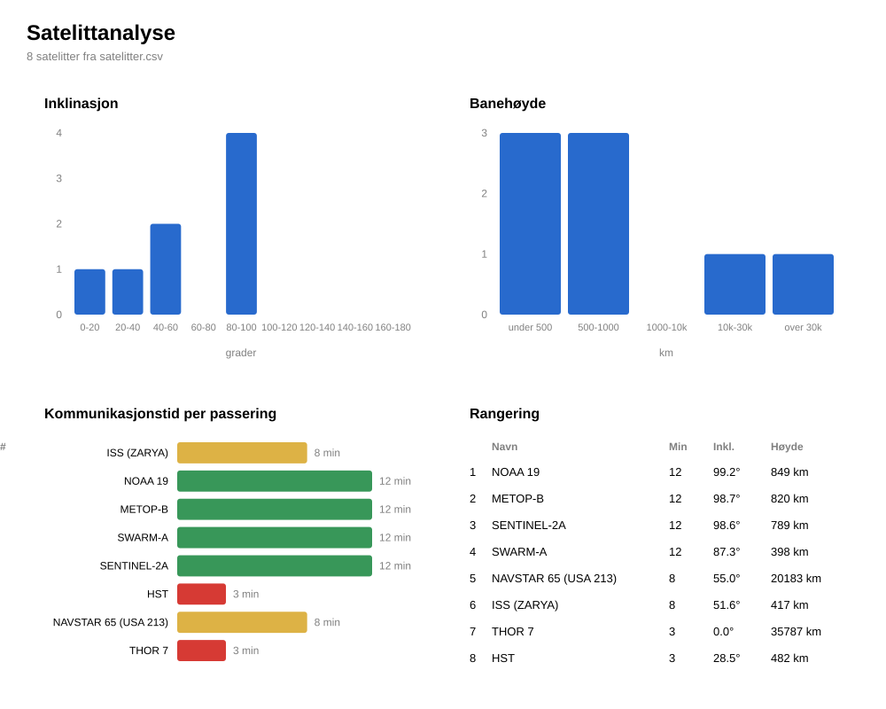

Henrik Olden
Johansen
Jeg går Vg2 informasjonsteknologi og ser etter læreplass. Her er litt av det jeg har laget med C++ og satellittdata.
Kartet viser eksempelbanen til HOJ-1.
HENRIK O. JOHANSEN 1 00001U 26001A 26309.50000000 .00000000 00000-0 00000-0 0 9995 2 00001 69.6619 18.9422 0001000 000.0000 000.0000 15.50000000000019
HOJ-1 er en oppdiktet satellitt. Punktet viser hvor den ville vært nå. De to markerte tallene har jeg lånt fra koordinatene til Tromsø.
Om meg
Jeg liker å jobbe med C++ og finne ut hvordan programmer fungerer på innsiden.
Jeg bruker mye IDA Pro når jeg undersøker Windows-programmer. Jeg har også laget et program som regner på satellittbaner, etter å ha vært i praksis hos Kongsberg Spacetec.
Erfaring
-
2026
Utplassering hos Kongsberg Spacetec
Tromsø · Bakkestasjoner og satellittdata
I praksis fikk jeg se hvordan en bakkestasjon tar imot data. Stasjonen må vite når satellitten kommer over horisonten og hvor antennen skal peke.
-
2025 –
Informasjonsteknologi
Videregående skole · Vg2
Ferdigheter
- Systemspråk
- C
- C++
- C#
- Assembly
- Scripting
- Python
- Web
- HTML
- CSS
- JavaScript
- Romfart
- TLE / banedata
- Banemekanikk
- Satellittpasseringer
- Sikkerhet
- Red teaming
- Blue teaming
- Reverse engineering
- Verktøy
- CMake
- Google Test
- Git
- IDA Pro
- VS Code
Prosjekter
-
TLE-analyse av satellitter
Jeg skrev et program som leser banedata og regner ut blant annet banehøyde og tid over horisonten. Diagrammet under viser resultatet for åtte satellitter.
C++17 · CMake · Google Test
2026

Åtte satellitter fra satellitter.csv. -
Aster Debugger – Ring 0-debugger for Roblox
Jeg laget debuggeren for å finne ut hvorfor Roblox lukket seg når jeg testet executoren. Programmet kjører i brukermodus og leser minnet gjennom en sårbar kjernedriver i Ring 0, altså BYOVD. Jeg kan følge trådene, se funksjonskallene og gå gjennom de siste tre sekundene før spillet lukker seg. Den kan også lese krasjdumper og gruppere like krasj.
C++ · BYOVD · Win32
2026
-
Astēr – executor for Roblox
Astēr er executoren min for Roblox. Den har en innebygd Luau-kompilator og sender resultatet fra skriptet tilbake til grensesnittet. Jeg har jobbet med filfunksjonene og Drawing-API-et også. Det siste har tatt en del feilsøking, spesielt når figurene har riktige verdier i testene, men ikke vises i spillet.
C++ · Luau · IDA Pro
2026
-
Astēr Decryptor
Et Python-verktøy jeg jobber med for å dekryptere Roblox-klientfiler til analyse i IDA. Det kjøres fra terminalen og viser framdriften underveis. Ulike klientversjoner trenger egne tilpasninger. Verktøyet varsler hvis ingen sider ble dekryptert, selv om det ble skrevet en ny fil.
Python · PE-formatet
2026
-
Porteføljenettside
Denne siden begynte som skisser i Figma. Kartet er tegnet med SVG og oppdateres med JavaScript.
HTML · CSS · JavaScript
2026